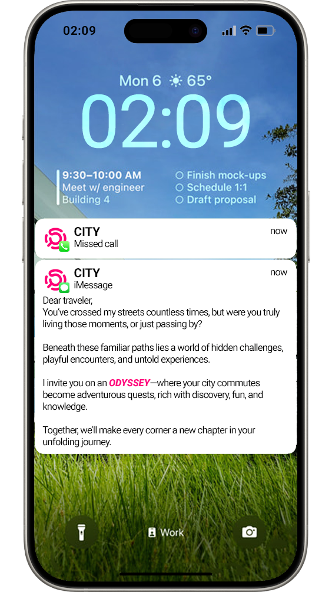

Engulfed in tasks,
drowned by the mundane.
The city rushes past,
lost in OBLIVION.
Steps are taken,
but the journey fades.
Moments scatter like dust—
unseen, unheld, unremembered.
Home is reached,
yet the path is a void.
A commute,
disjointed, disconnected, lost.
Have you ever started a journey,
reached your destination,
but couldn't remember how you got there?
The city felt like a blur,
lost in OBLIVIAN,
and the experience was disconnected,
as if the journey never really happened.
Problem Statement for Oblivion
In today's technologically driven world, our relationship with urban environments has drastically changed. Modern commutes have become monotonous and disconnected, defined by passive interactions with the city. Once moments of observation and exploration, commutes are now dominated by screens, reshaping attentional habits and muscle memory. Gaze patterns, once directed outward toward the environment, now predominantly focus downward, reducing the city to a mere backdrop. This detachment diminishes meaningful engagement with urban spaces, eroding their historical, cultural, and emotional significance.
"An observational study on the disconnect between people and the city, exploring gaze patterns, physical interactions, and the relationship between time, location, and activity during urban commutes."
"The ways our bodies move during commutes reflect habits shaped by technology, limiting physical engagement with the city."
1. BODY PATTERN
Modern commutes reveal how technology has reshaped physical behaviors. Once fluid and responsive to the environment, body patterns now reflect routine and detachment, with individuals walking with heads down or minimally interacting with their surroundings. This shift highlights how urban engagement has become increasingly passive and disconnected.

.jpg)
.jpg)
.jpg)
.jpg)
.jpg)
.jpg)
.jpg)
.jpg)
.jpg)
"Commutes fostered outward gaze and exploration, but screens have shifted focus downward, reshaping attentional habits and reducing engagement with the environment."
2. GAZE
In the past, commutes were opportunities for observation and exploration, with gaze patterns naturally directed outward toward the environment. This outward focus encouraged a dynamic relationship with urban spaces, fostering awareness and connection. Over time, however, the proliferation of screens has reshaped attentional habits and muscle memory. Today, gaze patterns are predominantly downward, fixed on devices, which has significantly diminished meaningful engagement with the surrounding environment and blurred our connection with the city.
.jpg)
.jpg)
.jpg)
.jpg)
.jpg)
.jpg)
.jpg)
.jpg)
.jpg)
.jpg)
.jpg)
.jpg)
.jpg)
.jpg)
.jpg)
.jpg)
.jpg)
.jpg)
.jpg)
.jpg)
.jpg)
.jpg)
.jpg)
.jpg)
.jpg)
.jpg)
.jpg)
.jpg)
.jpg)
.jpg)
.jpg)
.jpg)
.jpg)
.jpg)
.jpg)
.jpg)
.jpg)
.jpg)
.jpg)
.jpg)
.jpg)
.jpg)
.jpg)
.jpg)
.jpg)
.jpg)


GAZE TRACKER - Mapping and Shaping Attention during OBLIVIAN
"In the past, looking around was instinctive, while in the present, a downward gaze has become the default."
3. TIME
The contrast between the old and new city highlights a significant shift in default commuting behaviors. In the past, people's natural actions during commutes involved looking around, straight ahead, or upward, engaging with their surroundings and making visionary connections with the environment. These behaviors were instinctive, fostering an active relationship with the urban context. In the present, the default action has shifted to looking downward, regardless of whether a device is in hand. This change reflects how technology and habitual screen use have reprogrammed attentional habits, altering the innate ways people interact with their urban environments over time.
.png)
.png)
.png)
.png)
.png)
.png)
.png)
.png)
.png)
.png)
"Location and context hold the power to shape activity, gaze, and body patterns, influencing how people engage and interact with the city."
4. LOCATION
The power of a location lies in its ability to shape human activity and interaction by influencing where and how people direct their gaze. On streets, individuals often look down at devices, disengaged from their surroundings. In contrast, locations like Times Square or public plazas actively invite people to look up and around, offering opportunities to discover, interact, and engage with the environment. A campus fosters quiet observation and focus, while public seating encourages social interaction or moments of rest. These differences highlight the strong relationship between place and behavior, proving that location holds the power to create and enhance opportunities for engagement and discovery.
.png)
.png)
.png)
.png)
.png)
.png)
.png)
.png)
.png)
"Activity transforms commutes into personal journeys, creating unique relationships between people and the city."
5. ACTIVITY
Activity is a pivotal factor that can transform a person's journey from an Oblivion to an Odyssey. Even within the same location and time, activity becomes a deeply personal experience, shaping how individuals interact with the city and develop a unique relationship with it. Activities can vary widely: something a person plans to do, something spontaneous sparked by what they encounter, an opportunity intentionally offered by the city, or something they actively seek and enjoy. These diverse permutations make activity a user-centric element, turning the journey into a meaningful exploration and fostering a personal connection with the urban environment.
.png)
.png)
.png)
.png)
.png)
.png)
.png)
.png)
.png)
CONCLUSION FROM THE STUDY - OBLIVIAN
The exploration of body patterns, gaze, and time highlights how modern commuting behaviors have transformed our relationship with urban environments. Technology has reshaped physical habits, with body patterns reflecting detachment and routine, while gaze has shifted from outward exploration to a default downward focus. Similarly, time, which once fostered instinctive engagement with surroundings, is now compressed and hurried, leaving little space for meaningful connections. These shifts reveal the growing disconnection between people and the city.
Location and activity, however, offer pathways to reclaim this lost engagement. Location holds the power to shape interactions, encouraging discovery and connection, while activity remains a deeply personal factor that transforms commutes into unique journeys. Whether planned, spontaneous, or city-driven, activities allow individuals to build relationships with their surroundings, turning mundane routines into opportunities for exploration. Together, these factors present the potential to reconnect individuals with urban environments, transforming disconnected commutes into meaningful urban experiences.
"The Intersection, Interaction, Interplay of body patterns, gaze, time, location, and activity defines urban engagement, creating opportunities to reimagine and transform our journeys."
-

from disconnected OBLIVIAN,
to an engaging ODYSSEY,


STEPPING INTO THE WORLD OF ODYSSEY
Odyssey reimagines urban commutes as opportunities for active engagement and exploration. Designed for individuals seeking more than routine travel, the project leverages user profile generation, real-time location-based activity mapping, and gamification to transform the city into an interactive playground. By combining spatial computing and AI-driven personalization, Odyssey enables users to rediscover their urban surroundings through curated activities tailored to their preferences and behaviors.
The project investigates scales ranging from personal gaze patterns to city-wide interactions, bridging the gap between virtual and physical experiences. At stake is the growing disconnection between people and the city—Odyssey fosters mindful observation, participatory discovery, and deeper engagement with urban environments, turning passive routines into opportunities for exploration and connection.
"Odyssey transforms urban commutes into interactive journeys, bridging the gap between people and the city through personalized discovery and engagement."
WHAT?
ODYSSEY is an app that reimagines city commutes as interactive, discovery-filled journeys. By blending gamification with knowledge-sharing and meaningful interactions, it turns the urban landscape into an engaging playground for exploration.
"ODYSSEY transforms routine commutes into interactive, discovery-filled journeys, blending playfulness with meaningful urban interactions."
WHOM?
The primary audience for Odyssey includes urban commuters seeking a deeper connection with their city. These individuals are curious, reflective, and open to transforming their daily routines into meaningful journeys. They may be professionals, students, or residents navigating urban environments who feel disconnected from their surroundings and are eager to engage in exploration and discovery.
"Designed for those who want more than a commute,ODYSSEY is for people seeking to connect, engage, interact, and rediscover the city."
HOW?
ODYSSEY uses advanced tools like user profiles, location-based services, gamification, spatial computing, AI-driven personalization, and activity generation. These methods personalize the urban experience, creating dynamic activity nodes and turning the city into an interactive and engaging playground for exploration.
"ODYSSEY leverages AI, gamification, and spatial computing to transform commutes into dynamic, personalized urban journeys."
WHY?
ODYSSEY addresses the monotony of routine commutes, encouraging users to deepen their connection with the city. By fostering curiosity, belonging, interactivity, and playfulness, it transforms daily travel into engaging experiences that inspire a renewed sense of exploration and discovery in urban spaces.
"ODYSSEY fosters curiosity and interactivity, breaking the monotony of commutes and reconnecting people with their city."
EXPLORER PROFILE TAB

EXPLORER PROFILE TAB
The Explorer Profile Tab is designed to help users uncover their unique relationship with the city. Through reflective activities like capturing photos, studying objects, and documenting sensory experiences, users gain a deeper understanding of their commutes and interactions with urban spaces. This tab serves as a foundation for personalized exploration, encouraging mindfulness and connection with the environment.
"Discover your city through reflection—uncover patterns, senses, and stories that shape your urban experience."
DATA USED
User-generated data such as photos, textual reflections, mood tracking, and sensory observations (e.g., sounds and smells).
DATA ANALYSIS
NLP techniques analyze text to detect moods and themes, while image recognition identifies patterns or objects. This data creates Observation and Aspirational Pattern Lists, personalizing future activities.
COMPUTATIONAL TOOLS
The Explorer Profile Tab employs computational methods to extract meaningful insights from user inputs. Natural Language Processing (NLP) analyzes text reflections to identify moods, themes, and preferences, while image recognition detects patterns and objects in uploaded photos. These techniques build a personalized glossary of observation and wishlist patterns. The system incorporates machine learning to adapt and refine insights as users provide new data, ensuring a dynamic, evolving profile. By addressing the disconnection between individuals and their urban environments, these workflows make it possible to tailor activities and interactions, fostering a deeper relationship with the city.
"Using NLP, image recognition, and machine learning, this Tab transforms user reflections into personalized insights, developing commute map data."
AI & ML : Processes user inputs to create personalized patterns.
NLP : Analyzes text for mood and preferences.
DATA ENTRY TOOLS : Supports text, image, and icon inputs.
DESIGN METHODS
The Explorer Profile Tab integrates participatory, analytic, and reflective design practices. Participatory methods invite users to reflect on their commutes through sensory-focused activities like photo capture and journaling. Analytic approaches process these reflections to identify behavioral and sensory patterns, revealing how users interact with the city. Speculative design reimagines commutes as opportunities for discovery, connecting individuals with urban spaces in new, meaningful ways. These practices make it possible to explore the built environment at multiple scales offering a framework for fostering engagement and connection in increasingly disconnected routines.
"Participatory, analytic, and reflective practices reimagine commutes as opportunities for discovery, fostering deeper connections with the city."
ANALYTIC : Gathers data to identify user patterns.
PARTICIPATORY : Engages users in documenting experiences.
REFLECTIVE : Promotes critical thinking about commutes.

ACTIVITY 1 : PATH DISCOVERY
Users log the start and end points of their journey, the mode of transport, the purpose, and duration of their commute. This activity helps users reflect on their travel routines and uncover any unnoticed elements along the way.
ACTIVITY 2 : PHOTO CAPTURE
Participants take photos of objects, places, or scenes that catch their attention during their commute. This activity encourages visual exploration and prompts users to reflect on what they find visually intriguing.

ACTIVITY 3 : OBJECT STUDY
Users select a specific object from their commute and describe its characteristics, such as color, texture, and purpose. They also share what drew their attention to the object and any imaginative stories it inspired

ACTIVITY 4 : SMELL CAPTURE
This activity focuses on sensory engagement by having users describe two or three distinct scents encountered during their commute. Users reflect on how these smells contribute to their journey's sensory palette.

ACTIVITY 5 : SOUNDS CAPTURE
Participants are encouraged to listen closely to the sounds around them, noting two or three distinct noises and reflecting on how they felt. This activity highlights the auditory dimension of urban commutes.

ACTIVITY 6 : GAZE PATTERN
Users track where their gaze focuses during the commute and record the areas or elements they notice most often. This activity promotes awareness of attentional habits and how external factors influence gaze shifts.

ACTIVITY 7 : MOOD AND PLACE
Users choose a location from their commute that influenced their mood and describe the connection between the place, their feelings, and specific details they remember. This activity connects emotional responses to spatial experiences.
REFLECTIONS DASHBOARD TAB
COMMUTE MAP : REFLECTIONS DASHBOARD TAB
The Reflections Dashboard serves as an analytical and reflective interface, synthesizing data from the Explorer Profile Tab into an engaging visualization. By integrating maps, locations, symbols, icons, photos, and sensory markers like sounds and smells, the dashboard captures the user's commute experience in its entirety. It offers a platform for users to reflect on their interactions with the city, uncover patterns, and identify overlooked or underexplored elements, transforming raw commute data into meaningful insights.

PATTERN GLOSSARIES : OBSERVATION AND ASPIRATION
The dashboard generates two critical lists that dynamically evolve over time:Observation Pattern List: Identifies categories and elements the user has actively engaged with, revealing recurring behaviors and sensory preferences. Aspirational Pattern List: Highlights activities or interactions the user aspires to engage with, whether they are missed opportunities or emerging interests uncovered during commutes. These lists offer a deeper understanding of user behavior and aspirations, serving as the foundation for the application's activity generation system. By bridging past actions with future possibilities, the glossary transforms passive documentation into actionable pathways for richer urban engagement.

DATA USED
Aggregated data from the Explorer Profile Tab, including commute maps, sensory data, and user reflections.
DATA ANALYSIS
Data is synthesized to update Observation and Aspirational Pattern Lists, providing insights into the user’s evolving interactions with the city.
COMPUTATIONAL METHODS
The Reflections Dashboard integrates analytic, reflective, and narrative design methods to transform commute data into meaningful insights. Analytic methods process user inputs, uncovering behavioral patterns and sensory interactions. Reflective practices encourage users to revisit their urban experiences, fostering self-awareness and deeper engagement. Narrative design constructs a personalized story of each journey, linking observations with aspirations. Speculative practices envision data as a tool for future exploration, while participatory design empowers users to influence their experience by dynamically updating Observation and Aspirational Pattern Lists.
"The Reflections Dashboard uses analytic, reflective, and narrative practices to transform commute data into a story of engagement and aspirations."
DATA VISUALIZATION : Displays progress and insights.
UI DESIGN : Intuitive dashboards for user interaction
FEEDBACK LOOPS : Updates profiles with reflection data.
DESIGN METHODS
The dashboard employs advanced computational tools to process, analyze, and visualize data. Data Aggregation integrates inputs like maps, photos, and sensory elements, while data visualization tools like D3.js or Chart.js create interactive and intuitive visuals. Machine learning algorithms dynamically update Observation and Aspirational Pattern Lists, reflecting evolving user preferences. Backend systems process commute data, ensuring seamless integration with activity generation workflows. The interface, built using design tools like Figma or Adobe XD, ensures a user-friendly experience, blending technology with urban storytelling.
"By leveraging machine learning, data visualization, and dynamic updates, the Reflections Dashboard transforms commute data into actionable urban insights."
ANALYTIC : Displays trends and insights from user data.
NARRATIVE : Tells a personalized story of the user's journey.
SPECULATIVE : Dashboards as identity-building tools.
DISCOVERY MAP TAB

DISCOVERY MAP TAB
The Discovery Map transforms real-time location data into an interactive urban exploration tool. It visualizes the user's current location and allows them to set a radius of interaction, revealing curated activity nodes within that range. Each activity node is tailored to the user's profile, combining past observations and aspirations to create meaningful opportunities for engagement. The map bridges the gap between physical spaces and virtual interactions, encouraging users to rediscover their city through dynamic, personalized exploration. By turning live location data into actionable activities, the Discovery Map redefines how users interact with their urban environment.
DATA USED
Real-time location data combined with user profiles and urban context (e.g., landmarks, place types).
DATA ANALYSIS
Dynamic mapping tools like Mapbox process live location data, overlaying personalized activity nodes that are contextually relevant.
COMPUTATIONAL METHODS
The Discovery Map integrates advanced computational tools to deliver a personalized urban exploration experience. Real-Time Mapping APIs like Mapbox process user location data to display activity nodes within a set radius. Machine Learning Algorithms analyze user profiles, combining observation and aspiration patterns to generate tailored activities. Geospatial Analysis Tools contextualize nodes within the physical environment, ensuring relevance to the user's location. Dynamic Backend Systems process live data inputs, enabling seamless updates and personalized interactions.These methods ensure a responsive, data-driven framework that bridges virtual and physical urban spaces.
"Real-time mapping, machine learning, and geospatial tools power the Discovery Map, creating a dynamic, personalized exploration experience."
REAL TIME MAPPING : Tracks location and activity nodes.
SPATIAL COMPUTING : Defines radius of interaction.
ACTIVITY GENERATION : Uses AI, rules, and randomization to create tasks.
DESIGN METHODS
The Discovery Map employs speculative, participatory, and spatial design methods to redefine urban exploration. Speculative design envisions the city as an interactive playground, blending physical and virtual engagement. Participatory practices allow users to actively shape their exploration by setting interaction radii and selecting activity nodes. Spatial design leverages real-time mapping to contextualize user interactions within their immediate environment, fostering a dynamic relationship between users and the city. These methods create a framework for personalized urban discovery, transforming commutes into immersive and interactive journeys.
"The Discovery Map uses speculative and spatial design to turn the city into an interactive playground for personalized exploration."
GAMIFIED : Adds playfulness to urban discovery.
SPATIAL COMPUTING : Maps real-time activities within set radii.
PARTICIPATORY : Enables user-defined exploration.
ACTIVITY HUB TAB
ACTIVITY HUB TAB
The Activity Hub is where exploration evolves into meaningful action. Each activity node on the Discovery Map is generated through the Activity Generation Method, derived from the reflections and patterns collected in the Explorer Profile Tab. These curated activities are personalized to the user, offering a mix of physical and virtual interactions that align with their preferences and aspirations. By transforming user-specific data into actionable tasks, the Activity Hub bridges passive observation and active engagement, encouraging deeper and more personalized interaction with the city.

DATA USED
Observation and Aspirational Pattern Lists, behavioral insights, and a library of preset activities.
DATA ANALYSIS
Machine learning personalizes preset activities, blending user-specific data with interactive tasks. Behavioral patterns refine task generation over time.
COMPUTATIONAL METHODS
The Activity Hub integrates computational tools to create seamless and personalized user experiences. Activity Generation Algorithms dynamically create tasks using observation and aspiration patterns derived from the Explorer Profile Tab. Real-Time Data Processing ensures activity nodes are relevant to the user's current location and preferences. Machine Learning Models adapt activities based on evolving user interactions, refining future recommendations. Interactive Mapping APIs visualize activity nodes on the Discovery Map, bridging virtual prompts with physical spaces. These tools enable a responsive, data-driven system that transforms reflections into meaningful, actionable tasks.
"The Activity Hub uses machine learning and real-time mapping to generate dynamic, personalized activities that connect users to their city."
GAMIFICATION : Engages users through interactive tasks.
SPATIAL COMPUTING : Weaves natural and virtual worlds.
REFLECTIONS : Updates user data through feedback.
DESIGN METHODS
The Activity Hub employs participatory, speculative, and narrative design methods to create engaging and personalized user experiences. Participatory design ensures that tasks are tailored to individual reflections and aspirations, encouraging users to actively shape their interaction with the city. Speculative methods reimagine urban spaces as interactive playgrounds, blending physical exploration with virtual engagement. Narrative design connects each activity to the user's journey, creating a cohesive and meaningful experience. Together, these methods transform commutes into opportunities for discovery, fostering deeper relationships between users and their urban environments.
"The Activity Hub blends participatory and speculative design to transform commutes into personalized, interactive urban experiences."
GAMIFIED : Offers engaging, task-based activities.
PARTICIPATORY : Engages users in documenting experiences.
EXPERIMENTAL : Explores how tasks shape city interaction while imagining innovative approaches to urban engagement.
ACTIVITY HUB : DESCRIPTION MODE
The Description Mode provides an insightful overview of each activity, explaining its purpose and relevance to the user's reflections and aspirations. It bridges the connection between the user's past observations and the present task, giving context to how the activity relates to their journey. This mode helps users approach the activity with clarity and intention, fostering a deeper sense of engagement.

ACTIVITY HUB : INSTRUCTIONS MODE
The Instructions Mode offers clear, step-by-step guidance to help users complete the activity effortlessly. It ensures that every task is easy to follow, blending both virtual prompts and physical interactions. This mode keeps users focused and confident, ensuring their experience is smooth, intuitive, and fulfilling.

ACTIVITY HUB : PLAY MODE
The Play Mode is where the activity comes to life. Users immerse themselves in personalized tasks that blend creativity, exploration, and interaction. This mode turns their urban environment into an engaging playground, encouraging meaningful connections with their surroundings while discovering new perspectives.

Disconnected Commuting
The city feels like a static backdrop, offering little interaction or meaningful engagement.


Purposeful Connection
The city transforms into an interactive space, enriching journeys with active engagement.
Passive Viewing
Users move through the city with downward gaze, paying little attention to their surroundings.


Active Participation
Users engage with the city, noticing hidden details, objects, and interactions around them.
Limited Awareness
Users often overlook the city's elements, objects, and sounds, missing details during commutes.


Increased Curiosity
Users notice the city's elements, objects, and sounds, appreciating details they once ignored.
Foundation of ODYSSEY:
Archived experiments

EXPERIMENTAL EXERCISES
This visual represents one of the commute archives conducted as an experiment to collect user data for the Explorer Profile. Through tasks like path discovery, photo capture, object study, and sensory observations, data such as geolocations, images, sounds, and reflections were gathered. This archive laid the foundation for identifying Observation Patterns (engaged elements) and Aspirational Patterns (desired elements). These insights informed the development of computational tools, activity generation methods, and interfaces, enabling the creation of commute maps, dashboards, and personalized activities for urban exploration.
"This commute archive experiment gathered foundational data to map patterns and shape personalized urban experiences."
Insights, Readings, and Precedents
"Primary project inspiration"
A Walk in the City
A Walk in the City explores psychogeography, emphasizing walking as a reflective tool for observing and emotionally connecting with urban spaces beyond functional movement.
"ODYSSEY reintroduces psychogeographic exploration into commutes, encouraging users to rediscover their city through observation and engagement."

"Gamification and Interactive Exploration"

Pokémon GO
Pokémon GO uses augmented reality (AR) and location-based services to gamify urban exploration, encouraging users to explore real-world spaces to discover virtual elements and complete interactive tasks.
"ODYSSEY balances immersive digital interaction with physical exploration, offering an alternative to overstimulation by fostering deliberate, meaningful engagement."
Gouda Tour & Loquiz
These gamified tours engage users through interactive challenges, puzzles, and exploration, encouraging playful interactions with city spaces.
"ODYSSEY evolves gamified tours by dynamically generating tasks based on user inputs, ensuring unique and evolving urban experiences."

StoryTourist
StoryTourist gamifies city tours by combining storytelling with urban exploration, guiding users through locations to discover immersive narratives.
"ODYSSEY builds on story-driven exploration, tailoring tasks and narratives to user data for a uniquely personal urban journey."
Kresna : A Game and Cultural Tourism System
Kresna combines gamification and cultural tourism, offering tasks that connect users with heritage, cultural landmarks, and city spaces in an engaging way.
"ODYSSEY expands cultural exploration into everyday commutes, transforming routines into curated, reflective experiences."

"Data-Driven Urban Insights and Mapping"

MIT Senseable City Lab
The Senseable City Lab explores how data and technology reveal hidden urban dynamics, transforming how cities are understood and engaged.
"ODYSSEY uses data to create a participatory, human-centered framework that turns urban commutes into dynamic explorations."
"Gamification in Institutional and Cultural Contexts"

Gamification in Museums
This approach enhances engagement and learning in museum spaces through gamification, encouraging deeper, interactive connections with exhibits.
"ODYSSEY applies gamification principles to urban spaces, transforming commutes into interactive, living explorations of the city."
Amplifai Gamification Statistics
This research demonstrates how gamification increases engagement, motivation, and productivity by introducing interactive and goal-oriented systems. It highlights the power of gamified techniques to transform routine tasks into enjoyable, rewarding experiences.
"ODYSSEY leverages gamification to transform mundane commutes into interactive, engaging journeys, fostering curiosity and deeper city connections."

"Speculative and Immersive Urban Futures"

Hyper-Reality by Keiichi Matsuda
This speculative project envisions a hyper-immersive urban experience where virtual and physical realities merge seamlessly, saturating urban spaces with interactive digital overlays.
"ODYSSEY balances immersive digital interaction with physical exploration, fostering meaningful engagement without overwhelming the user."
Augmented City 3D
This video project imagines urban spaces transformed through augmented technology, blending virtual elements with real-world interactions to reshape how we navigate and perceive cities.
"ODYSSEY integrates augmented interactions subtly, using reflective and gamified tasks to reconnect users with their physical surroundings."